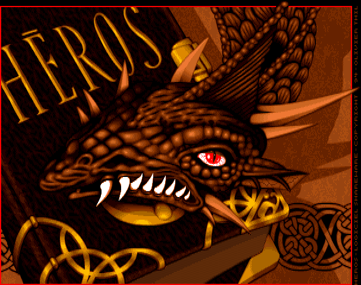

Aventure textuelle Amiga · Olivier Thil · 1994
Amiga text adventure · Olivier Thil · 1994
HEROS est un jeu d'aventure « dont vous êtes le héros » programmé sur Amiga en 1994 par Olivier Thil et diffusé en shareware, à l'occasion du concours DREAM. Vous incarnez un jeune homme lancé dans une quête médiévale-fantastique : villages, forêts, marais, dragon, temple oublié… Chaque page de texte, illustrée d'un décor et accompagnée de musique, offre quelques choix (F1 à F5). Il faut gérer sa vie, son or et ses objets.
Ce projet n'a pas pour but de refaire le jeu mais de le conserver et le rendre plus confortable, avec l'aide d'une IA (Claude) : l'exécutable original a été patché (le jeu reste sur sa disquette protégée, rien n'est copié sur disque ou en mémoire), une version anglaise a été ajoutée, et une version navigateur reprend les mêmes textes, images et musiques.
HEROS is a “choose your own adventure” game written for the Amiga in 1994 by Olivier Thil and released as shareware for the DREAM contest. You play a young man on a medieval-fantasy quest: villages, forests, swamps, a dragon, a forgotten temple… Each text page, with its picture and music, offers a few choices (F1–F5). You must manage your life, your gold and your items.
The aim of this project is not to remake the game but to preserve it and make it more comfortable, with the help of an AI (Claude): the original executable was patched (the game still runs from its protected floppy, nothing is copied to disk or memory), an English version was added, and a browser version uses the same texts, pictures and music.
En 1994, Olivier Thil écrit HEROS sur Amiga et le diffuse en shareware : le jeu paraît sur la disquette n° 13 de DREAM, dans le cadre d'un concours. Celui qui va au bout reçoit un code secret, à envoyer par carte postale à la rédaction pour participer au tirage au sort.
Plus de trente ans après, le jeu risquait de rester prisonnier de ses disquettes. Nous en avons extrait les textes, les décors et les musiques, compris sa logique (chaque écran, chaque test d'objet), puis vérifié que le nouveau moteur suit exactement les mêmes chemins que l'original.
In 1994, Olivier Thil wrote HEROS on the Amiga and released it as shareware: it appeared on disk no. 13 of DREAM, as part of a contest. Whoever finishes the game gets a secret code to send on a postcard to the editors for a prize draw.
More than thirty years later, the game risked staying locked in its floppies. We extracted its texts, pictures and music, worked out its logic (every screen, every item check), then verified that the new engine follows exactly the same paths as the original.
HerosExe fr|en en CLI.HerosSave-N est écrit).HerosExe fr|en from the CLI.HerosSave-N is written).HEROS.adf — image de disquette (880 Ko), démarre sur le Workbench. Pour un émulateur (WinUAE, FS-UAE, Amiberry…) ou à écrire sur une vraie disquette DD (ADF Opus, Greaseweazle…). Double-cliquer héros - français ou héros - english.
HEROS.adf — floppy image (880 KB), boots to Workbench. For an emulator (WinUAE, FS-UAE, Amiberry…) or to write to a real DD floppy (ADF Opus, Greaseweazle…). Double-click héros - français or héros - english.
HEROS.lha — le jeu seul (373 Ko) pour l'installer sur disque dur ou carte CF : décompresser avec LHA, puis lancer par les icônes. Les deux bibliothèques nécessaires sont jointes.
HEROS.lha — the game alone (373 KB) to install on a hard disk or CF card: unpack with LHA, then start it from the icons. The two required libraries are included.
heros_snes.sfc — ROM LoROM de 2 Mo, avec SRAM de 8 Ko. Pour un émulateur (bsnes, snes9x…) ou une flashcart (Everdrive, SD2SNES). Détails.
heros_snes.sfc — 2 MB LoROM image with 8 KB SRAM. For an emulator (bsnes, snes9x…) or a flash cart (Everdrive, SD2SNES). Details.
Le dépôt contient aussi une version Python du jeu (console et interface Tk) qui lit les fichiers DataHeros, ainsi que les outils utilisés pour patcher l'exécutable et fabriquer les données et l'ADF. Voir le dépôt GitHub.
The repository also holds a Python version of the game (console and Tk GUI) that reads the DataHeros files, plus the tools used to patch the executable and build the data and the ADF. See the GitHub repository.